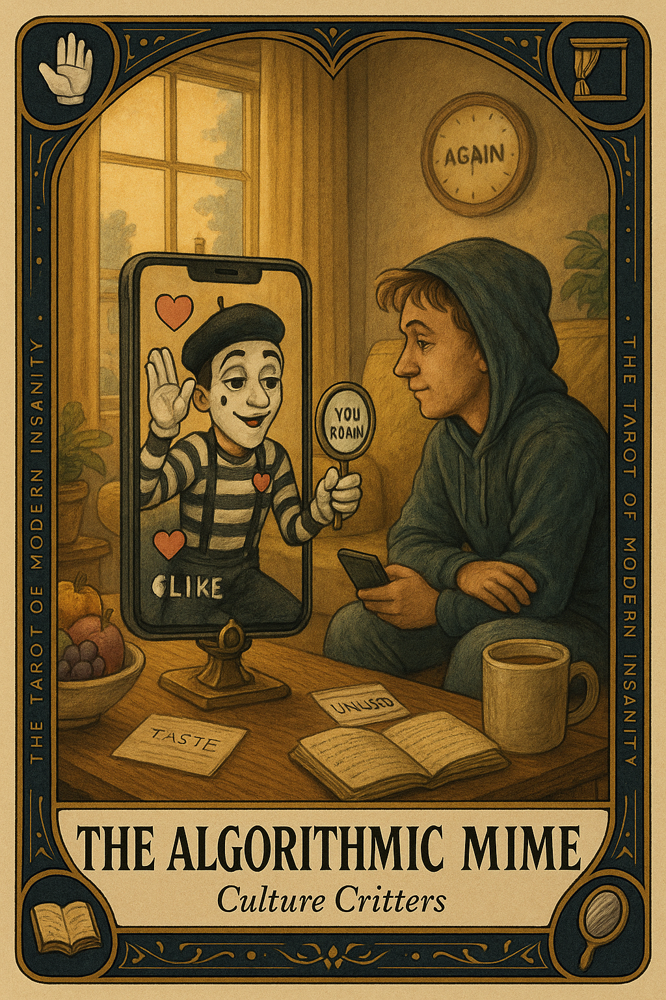
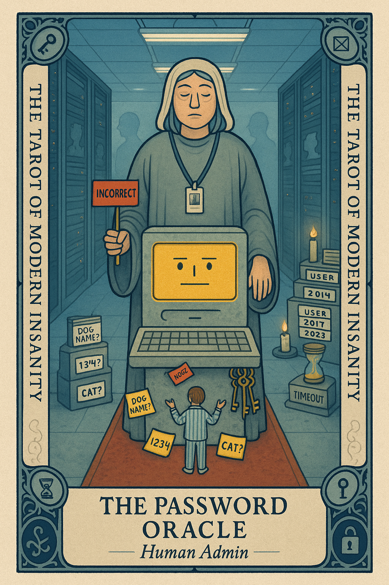
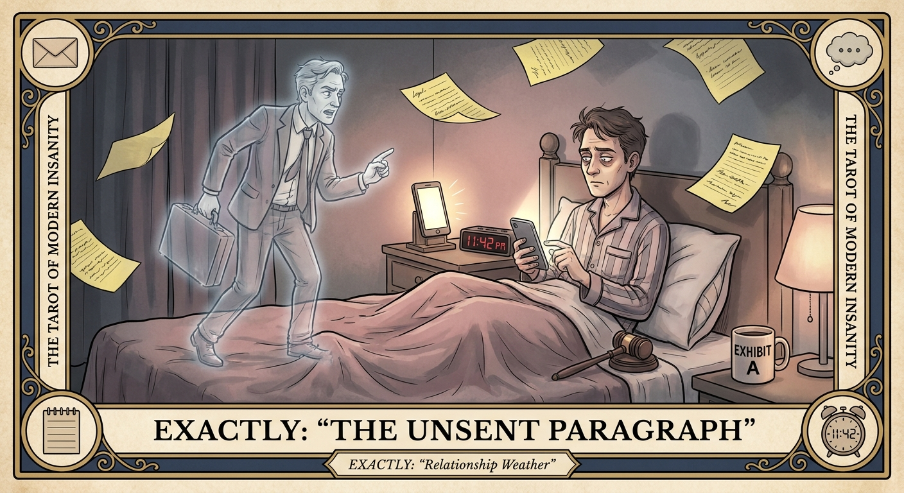
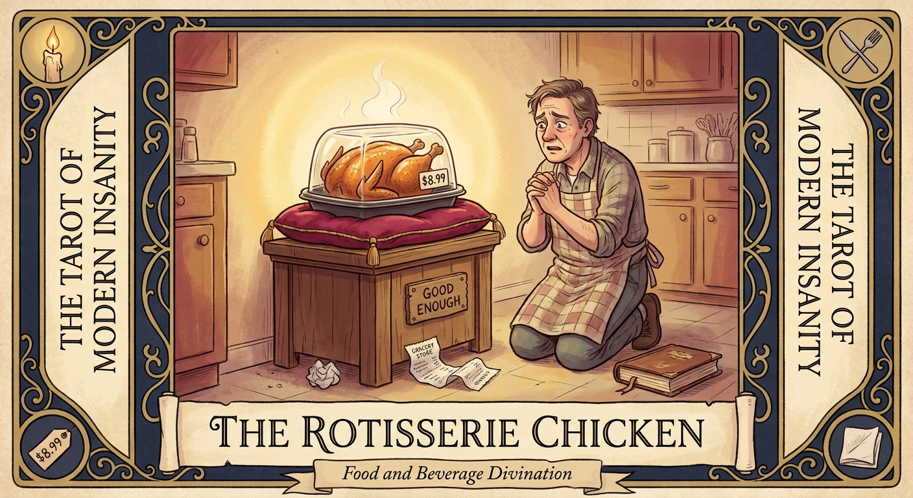
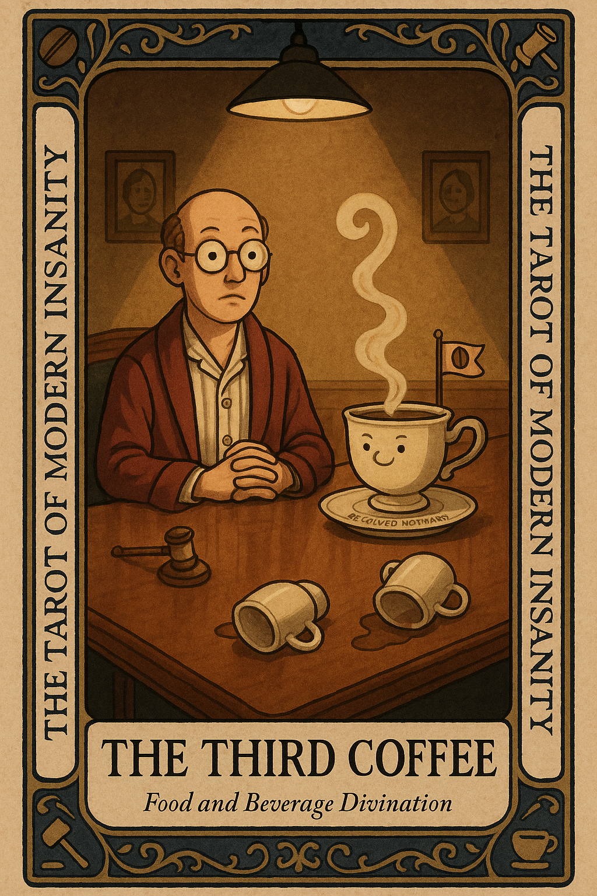
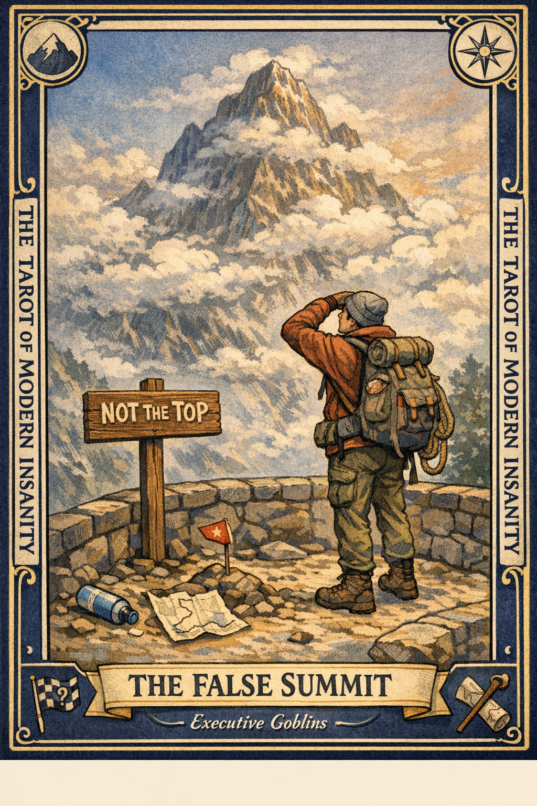
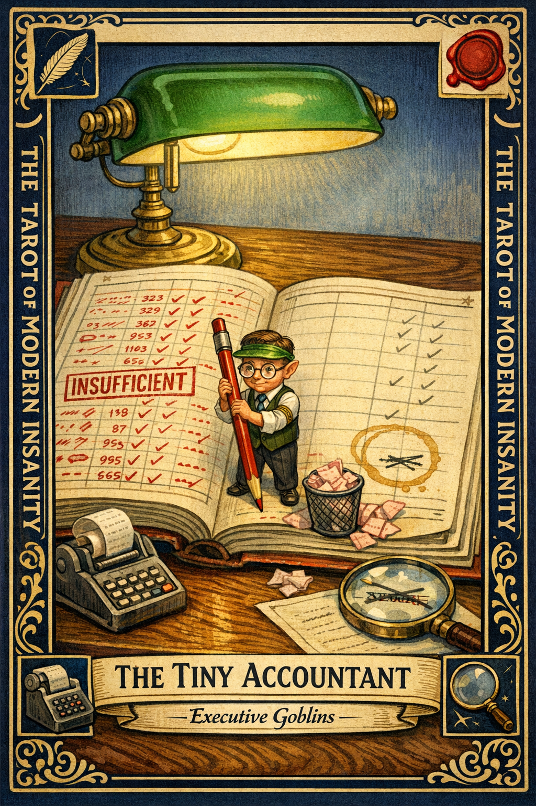
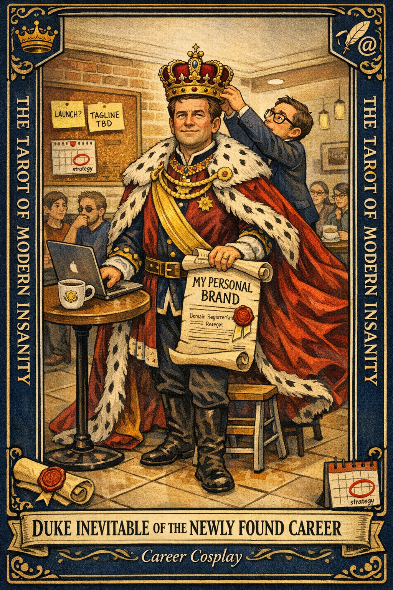
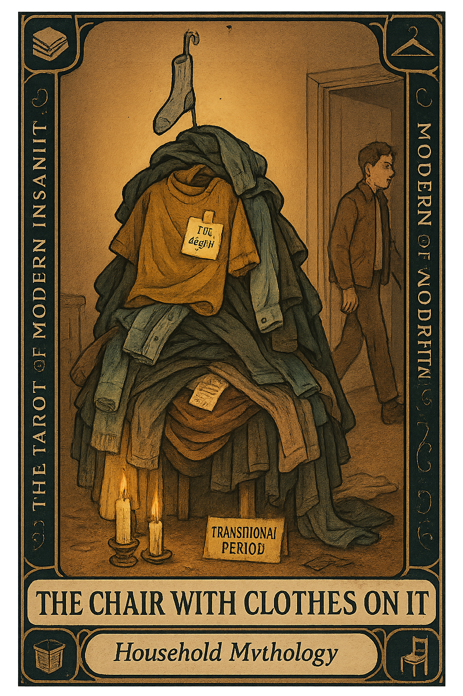

The Archive

The Algorithmic Mime
The Algorithmic Mime appears when your feed has stopped showing you the world and started miming a flattering caricature of yourself. It performs whatever you watched twice and calls that a personality.

The Password Oracle
The Password Oracle appears when you stand at a glowing login screen and realize you do not remember the version of yourself who made this account. A past you with different opinions about capital letters and dog names is now blocking the gate.

The Unsent Paragraph
The Unsent Paragraph appears when you have written a 600 word closing argument in your notes app to a person who is currently watching a sitcom and has no idea you are at war.

The Rotisserie Chicken
The Rotisserie Chicken appears when you have a small problem and you are about to solve it with a beautiful, dignified, eight step plan that nobody asked for.

The Third Coffee
The Third Coffee appears when you have stopped pursuing energy and started recruiting an entirely different person to handle your afternoon.

The False Summit
The False Summit appears when you crest what you believed was the final ridge and discover that you were standing at the scenic overlook, not the top.

The Tiny Accountant
The Tiny Accountant appears when a very small man with a very large red pen has quietly taken over your inner ledger. He itemizes every failure in triplicate and rounds every win down to zero.

Duke Inevitable of the Newly Found Career
The Duke appears when you have been staring at a new idea for six days and have already picked the outfit you will wear when it succeeds. The idea may be fine. The problem is that you have skipped past the part where anyone defines what finished looks like and gone straight to the ceremony.

The Chair With Clothes On It
Every bedroom contains a chair that is no longer a chair. It is a garment monument, a soft archive of every day you were almost ready to deal with it.